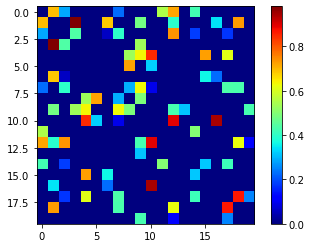
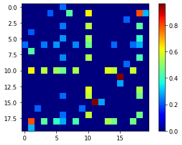

1 Department of Mathematics and Statistics, California State University, Chico
Data often has an underlying structure or geometry that can be modeled as a signal on the vertices of a weighted, undirected graph. Traditionally, the emphasis was on using a underlying graph, or network, to understand the properties of signals over the vertices. Recently, there has been a surge in converse problem; of learning a graph structure from a set of signals satisfying some constraints (Xia et al. 2021) (Dong et al. 2016) (Ortega et al. 2018). In previous research (Dong et al. 2016), (Tugnait 2021), (Pu et al. 2021), and (Saboksayr and Mateos 2021), signals on graph were assumed to follow multivariate gaussian distributions, but there has been little exploration in learning a network from binomial signals. In this work, we develop a noval methodology that allows for learning graph topology given a set of binary signals on the graph. An example of such signals on graph is presented in Figure 1.
Figure 1. Binary Signals on Graph
We consider a weighted undirected graph \(G = (V, E)\), with the vertices set \(V = {1, 2, \dots, N}\), and edge set \(E\). Let \(\mathbf{A}\) denote the weighted adjacency matrix for the graph \(G\). In the case of weighted undirected graph, \(\mathbf{A}\) is a square and symmetric matrix.
Let \(Y_{i,j}\) denote the signal on the node \(i\) of graph \(G\) at round \(j\), where \(j = 1, \dots, M\), and \(i = 1, \dots, N\). We assume that \(Y_{i,j}\) is a binary signal that can be 1, or 0.
Suppose the signals at stratum \(j\) denoted by \(Y[, j]\) for all \(N\) nodes are independent of the signals at stratum \(k\) denoted by \(Y[,k ]\), for \(j \neq k\). Let \(p_{i,j}\) denote the probability of \(Y_{i,j} = 1\). Our model assumes
\[\begin{equation} \label{eq: binaryglm} \text{logit}(p_{i,j}) = \mathbf{A} h )_i, \end{equation}\]
where \(\mathbf{A}\) is the adjacency matrix from the graph \(G\), \(h\) is a vector of latent factors that governs \(p_{i, j}\) through \(\mathbf{A}\) and assumed to be a standard normal random vector, and \(\alpha_j\) is a round specific parameter at stratum \(j\), and assumed to be normally distributed with mean of 0, and unknown variance \(\sigma^2\).
Consider the proabability mass function for a given \(A\) and signal \(y = Y[,k]\) \[\begin{align} P_{Ah}(y_i) &= P^{y_i}(1-p)^{1-y_i} \\ &= \left(\frac{e^{A[i,]h^T}}{1 + e^{A[i,]h^T}}\right)\left(1- \frac{e^{A[i,]h^T}}{1 + e^{A[i,]h^T}}\right)^{1-y_i} \\ &= \left(\frac{e^{A[i,]h^T}}{1 + e^{A[i,]h^T}}\right)\left(\frac{1}{1 + e^{A[i,]h^T}}\right)^{1-y_i} \\ &= \frac{e^{y(A[i,]h^T)}}{1 + e^{A[i,]h^T}} \end{align}\]
Therefore, our Likelihood function will be given by
\[\begin{align} \mathcal{L}(h) = \prod_{i=1}^N\frac{e^{y_i(A[i,]h^T)}}{1 + e^{A[i,]h^T}} \end{align}\]
In order to maximize we consider the natural logarithm of our likelihood
\[\begin{align} \log(\mathcal{L}(h)) = \sum_{i=1}^N\left(y_i(A[i,]h^T) - \log(1 + e^{A[i,]h^T})\right) \end{align}\]
Taking inspiration from the above derivation we will solve for estimated \(A\) by maximizing the following
\[\begin{equation} \label{eq:optimization} \begin{aligned} &\max_{A,h} \sum_{j = 1}^M\sum_{i=1}^N\left(y_{i,j}(A[i,]h^T) - \log(1 + e^{A[i,]h^T})\right) - \alpha \vert L \vert _ F \\ \textrm{s.t.} \quad &A_{i,j} = 0 \text{ if } i =j\\ &A_{i,j} \geq 0 \text{ if } i \neq j\\ &\mathbb{1}h^T = 0 \\ &\max(h) \leq a \\ &\min(h) \geq b \end{aligned} \end{equation}\] where \(\alpha\) is a tunning parameter for controlling the sparsity and \(a\) and \(b\) are tunning parameters for restricting the spread of the values of \(h\).
In each iteration of step 5) and 6) of Algorithm 1, the optimization program gives a Diciplined Concave Program that can be solved efficiently in Python with the CVXPY libarary. A random Erds-Reyni graph on \(N = 20\) nodes and edge probability \(p = 0.2\). Heat maps of the ground truth adjacency matrix and estitmated adjacency matrix are given, along with circular embeddings of the ground truth and estimated graphs.
| Ground Truth | Estimation |
|---|---|
|  |  |
Figure 2: Estimated Graph
Currently, GSP frameworks such as ours have limitations making them only practical in experimental settings. For instance, these frameworks require the input to be the entire graph. This automatically puts a harsh limit on the size of the graphs that can be learned. Another related limitation, is the availability of the algorithms used to learn the laplacian. In Saboksayr and Mateos (2021) the author shows fast proximal-gradient iterations can be applied to the framework given by Kalofolias (2016) converges to a globally optimal solution in \(O (1/k)\). A natural next step would be to apply fast proximal-gradient iterations our framework to overcome scalability issues.
Dong, Xiaowen, Dorina Thanou, Pascal Frossard, and Pierre Vandergheynst. 2016. “Learning Laplacian Matrix in Smooth Graph Signal Representations.” IEEE Transactions on Signal Processing 64 (23): 6160–73.
Kalofolias, Vassilis. 2016. “How to Learn a Graph from Smooth Signals.” In Artificial Intelligence and Statistics, 920–29. PMLR.
Ortega, Antonio, Pascal Frossard, Jelena Kovačević, José MF Moura, and Pierre Vandergheynst. 2018. “Graph Signal Processing: Overview, Challenges, and Applications.” Proceedings of the IEEE 106 (5): 808–28.
Pu, Xingyue, Tianyue Cao, Xiaoyun Zhang, Xiaowen Dong, and Siheng Chen. 2021. “Learning to Learn Graph Topologies.” Advances in Neural Information Processing Systems 34.
Saboksayr, Seyed Saman, and Gonzalo Mateos. 2021. “Accelerated Graph Learning from Smooth Signals.” IEEE Signal Processing Letters 28: 2192–6.
Tugnait, Jitendra K. 2021. “Sparse Graph Learning Under Laplacian-Related Constraints.” IEEE Access 9: 151067–79.
Xia, Feng, Ke Sun, Shuo Yu, Abdul Aziz, Liangtian Wan, Shirui Pan, and Huan Liu. 2021. “Graph Learning: A Survey.” IEEE Transactions on Artificial Intelligence 2 (2): 109–27.